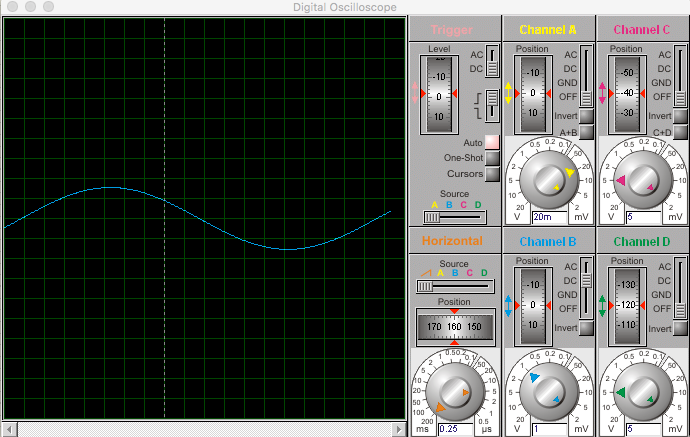

Figure 4.1 This is an example figure . . .
Figure x.x Short title of the figure . . .
Table 5.1 This is an example table . . .
Table x.x Short title of the figure . . .
Os valores propostos para os componentes foram: \[ \begin{aligned} R&=1.0\Omega\\ L&=1.0H\\ C&=0.5F \end{aligned} \]
Denotaremos y(t) para a tensão de saída no capacitor, e x(t) pela entrada logo:
\[ \begin{aligned} i &= \frac{x(t) - y(t)}{R}\\ i_{1} &= \frac{1}{L} \int y(t)dt\\ i_{2} &= C \frac{dy}{dt} \end{aligned} \]
Aplicando a Lei de Kichoffer nas correntes no nó, temos:
\[ i = i_{1} + i_{2} \]
Substituindo os termos:
\[ \begin{aligned} \frac{x(t) - y(t)}{2} = \int y(t)dt + \frac{1}{2} \frac{dy}{dt}\\ \frac{x(t)}{2} = \int y(t)dt + \frac{1}{2} \frac{dy}{dt} + \frac{y(t)}{2} \end{aligned} \]
Derivando e multiplicando por 2 em ambos os lados da equação:
\[ \frac{dx}{dt} = \frac{d^{2}y}{dt^{2}} + \frac{dy}{dt} + 2y(t) \]
Rescrevendo esta equação utilizando a notação do operador D:
\[ (D^2 + D + 2)y(t) = Dx(t) \]
Aplicando a Transformada de Laplace, chegamos na equação:
\[ Y(s) = \frac{s}{s^2 + s + 2} X(s) \]
Quando a entrada é um degrau unitário, temos:
\[ \begin{aligned} X(s) = \frac{1}{s} \Rightarrow Y(s) &= \frac{1}{s^2 + s + 2} \\ &= \frac{1}{(s + \frac{1}{2})^2 + \frac{7}{4}}\\ \end{aligned} \]
Aplicando a Transformada de Laplace Inversa, concluímos que para t > 0:
\[ y(t) = \frac{2\sqrt{7}}{7}e^{\frac{-1}{2}t}\sin{\frac{\sqrt{7}}{2}t} \]
Quando a entrada é um impulso, temos que:
\[ \begin{aligned} X(s) = 1 \Rightarrow Y(s) &= \frac{s}{s^2 + s + 2}\\ &= \frac{s + \frac{1}{2}}{(s+ \frac{1}{2})^2 + \frac{7}{4}} - \frac{1}{2}\frac{1}{(s+ \frac{1}{2})^2 + \frac{7}{4}} \end{aligned} \]
Deste modo, concluímos que para t > 0:
\[ y(t) = e^{\frac{-1}{2}t}[\cos{\frac{\sqrt{7}}{2}t}-\sin{\frac{\sqrt{7}}{2}t}] \]
Utilizando o circuito da Imagem 1.1. Quando a entrada é um impulso, podemos ver na Imagem 1.2 a resposta no osciloscópio:
Quando a entrada é um degrau, podemos ver na Imagem 1.3 a resposta no osciloscópio:
Os valores propostos para os componentes foram: \[ \begin{aligned} R&=1.0\Omega\\ L&=1.0H\\ C&=0.5F \end{aligned} \]
Aplicando a Lei de Kichoffer nas correntes no nó, temos:
\[ i = i_{1} + i_{2} \Rightarrow I(s) = I_1(s) + I_2(s) \]
Dessa vez, aplicaremos diretamente Laplace: \[ \begin{aligned} X(s) + V_{c}(s) &= Y(s)\\ V_{c}(s) &= \frac{I(s)}{sC}\\ I(s) &= Cs[Y(s) - X(s)] \end{aligned} \]
Sabemos também que: \[ \begin{aligned} I_{1}(s) &= \frac{1}{Ls}Y(s)\\ I_{2}(s) &= \frac{Y(s)}{R} \end{aligned} \]
Substituindo os termos:
\[ \begin{aligned} \frac{1}{2}s[Y(s) - X(s)] &= \frac{1}{s}Y(s) + \frac{Y(s)}{2}\\ sY(s) - sX(s) &= \frac{2}{s}Y(s) + Y(s)\\ sY(s) - Y(s) - \frac{2}{s}Y(s) &= sX(s)\\ (s^2 - s - 2)Y(s) &= s^2X(s)\\ \\ Y(s) &= \frac{s^2}{s^2 - s - 2}X(s)\\ Y(s) &= \frac{s^2}{(s + 1)(s - 2)}X(s) \end{aligned} \]
Quando a entrada é um degrau unitário, seguimos:
\[ \begin{aligned} X(s) = \frac{1}{s} \Rightarrow Y(s) &= \frac{s}{(s + 1)(s - 2)}\\ Y(s) &= \frac{1}{3(s + 1)} - \frac{2}{3(s - 2)} \end{aligned} \]
Aplicando Transformada de Laplace Inversa, concluímos que para t > 0:
\[ y(t) = \frac{1}{3}e^{-t} + \frac{2}{3}e^{2t} \]
Quando a entrada é um impulso, seguimos:
\[ \begin{aligned} X(s) = 1 \Rightarrow Y(s) &= \frac{s^2}{(s + 1)(s - 2)}\\ Y(s) &= 1 + \frac{4}{3(s - 2)} - \frac{1}{3(s + 1)} \end{aligned} \]
Aplicando Transformada de Laplace Inversa, concluímos que para t > 0:
\[ y(t) = \delta(t) + \frac{4}{3}e^{2t} - \frac{1}{3}e^{-t} \]
Utilizando o circuito da Imagem 1.4. Quando a entrada é um impulso, podemos ver na Imagem 1.5 a resposta no osciloscópio:

Quando a entrada é um degrau, podemos ver na Imagem 1.6 a resposta no osciloscópio: